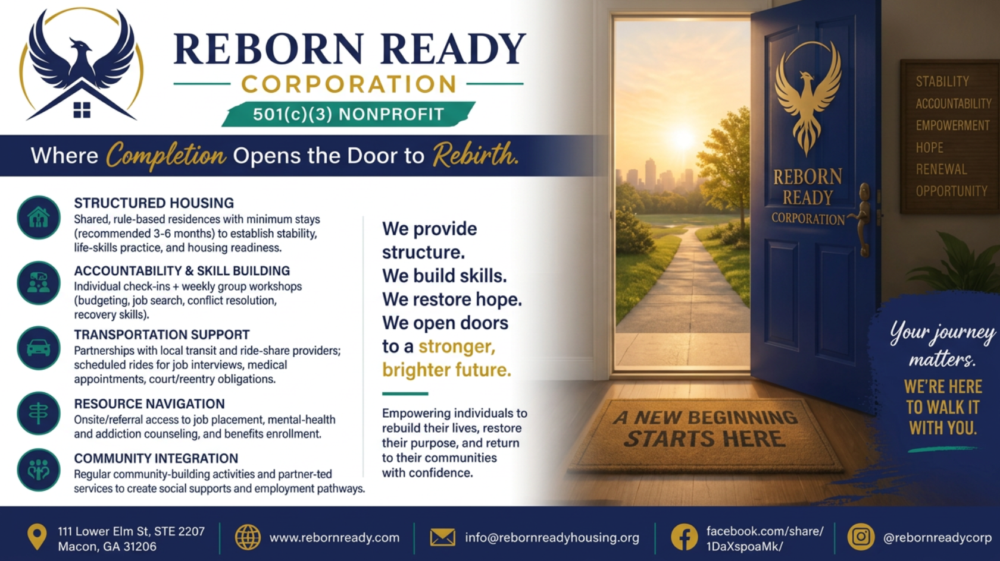
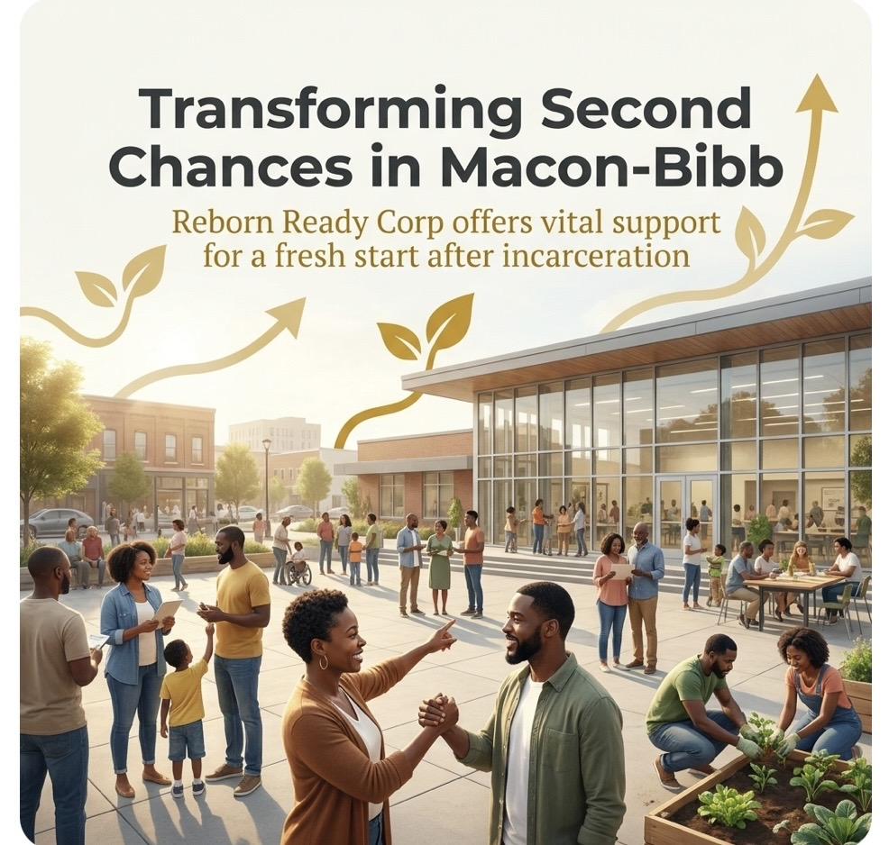

A nonprofit built on the belief that reentry is a community responsibility.
Reborn Ready Corp is a Macon-based nonprofit organization dedicated to reducing recidivism through a comprehensive, integrated approach to reentry. We don't offer isolated services — we build systems of support that address housing, employment, and wellbeing together.
As the mission holder and grant applicant for the Reborn Ready ecosystem, we oversee program design, fund development, community partnerships, and outcome tracking. Our work is grounded in Macon-Bibb County and designed to meet people where they are — on the day they come home.
We serve justice-involved adults at moderate-to-high recidivism risk, with specialized tracks for veterans and individuals in recovery from substance use disorders.



Crystal "Chrissy" Hunt
Founder & CEO, Reborn Ready Corp
Chrissy Hunt is a Macon-based nonprofit leader, entrepreneur, and community advocate with over seven years of experience in criminal justice administration and a degree in Criminal Justice. Before founding Reborn Ready Corp, she served in administrative and program coordination roles at a police department — work that gave her a front-row seat to the cycle of incarceration and the gaps in support that too often lead people back into the system.
But Chrissy's understanding of instability goes beyond the professional. She has experienced housing insecurity firsthand — a chapter of her life that gave her something no degree or job title could: the lived knowledge of what it feels like to have nowhere to go, and the unshakeable conviction that no one should face that alone.
That experience didn't break her. It built her purpose.
In response, Chrissy built Reborn Ready from the ground up — an integrated reentry ecosystem designed to address the root causes of recidivism through stable housing, meaningful employment, and wraparound support. Her vision goes beyond services: she believes that when justice-involved adults are given real tools and real opportunities, they don't just survive reentry — they become contributors to the communities they return to.
Chrissy leads Reborn Ready Corp as its Founder and CEO, overseeing mission strategy, grant development, and community partnerships across Macon-Bibb County.